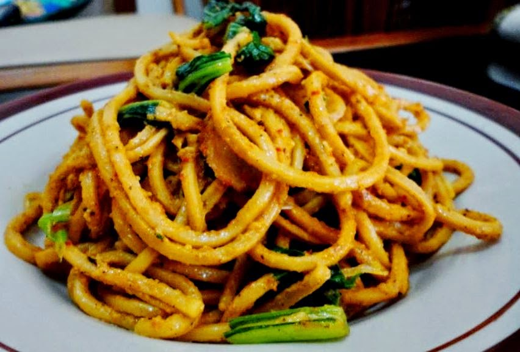

Kembali ke Index

Mi gomak khas Medan dikenal dengan rasanya yang sangat lezat. Biasanya disajikan dengan bumbu pedas. Kombinasi mi yang dicampur dengan bumbu pedas, dijamin bikin ketagihan.
Bahan |
Bumbu |
Cara Membuat
Bahan-bahan:
- 1/2 bungkus mie lidi rebus, tambah sedikit minyak lalu cuci bersih tiriskan
- 200 gr kol cuci dan iris-iris
- 100 gr wortel cuci dan iris-iris
- Daun bawang, iris-iris
- Seledri, iris-iris
- 7 butir bawang merah, iris
- Cabai secukupnya
- Penyedap rasa
- Garam
- Gula
- Kecap sesuai selera
Bumbu halus:
- 2 sdt merica atau sesuaikan selera
- 2 buah kemiri
- 5 siung bawang putih
Cara membuat:
- Tumis bawang merah sampai harum. Masukkan bumbu halus tumis sampai harum
- Masukkan wortel kol daun bawang tumis sampai layu masukkan sedikit air cabai hijau, iris dan aduk
- Masukkan mi lidinya tambahkan garam, gula, penyedap rasa dan kecap manis, lalu aduk rata
- Setelah tanak tes rasa dan masukkan rawit utuh dan daun seledri, aduk dan sajikan.
atas
Kembali ke Index